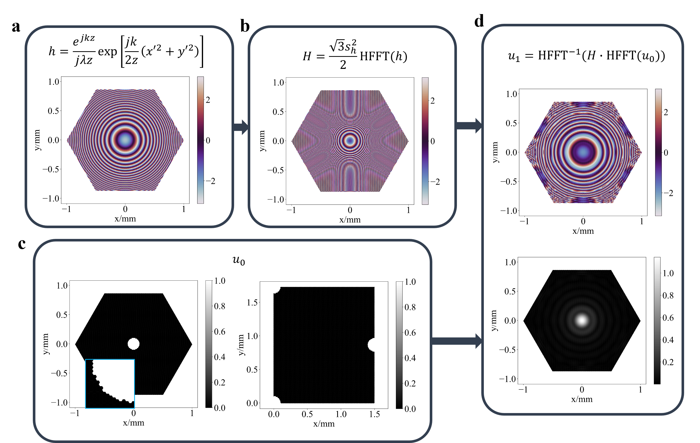

Hexagonal diffractive optical elements.
Yidan Zheng, Qiang Fu, Hadi Amata, Praneeth Chakravarthula, Felix Heide, Wolfgang Heidrich
Optic Express, 2023

Simulation of hexagonal wave propagation. (a) The phase profile of impulse response h with Fresnel approximation. (b) The phase profile of the transfer function H that calculated from h. (c) The circular source u0 with its original(left) and shifted(right) positions. (d) Simulated amplitude and phase profile of the diffracted field u1.
Simulation results of target images and their reconstructed holograms using hexagonal pixel arrangement. (a) Target images after hexagonal sampling through linear interpolation. (b) Simulated diffraction intensities solved by back-propagation.
Abstract
Diffractive optical elements (DOEs) have widespread applications in optics, ranging from point spread function engineering to holographic display. Conventionally, DOE design relies on Cartesian simulation grids, resulting in square features in the final design. Unfortunately, Cartesian grids provide an anisotropic sampling of the plane, and the resulting square features can be challenging to fabricate with high fidelity using methods such as photolithography. To address these limitations, we explore the use of hexagonal grids as a new grid structure for DOE design and fabrication. In this study, we demonstrate wave propagation simulation using an efficient hexagonal coordinate system and compare simulation accuracy with the standard Cartesian sampling scheme. Additionally, we have implemented algorithms for the inverse DOE design. The resulting hexagonal DOEs, encoded with wavefront information for holograms, are fabricated and experimentally compared to their Cartesian counterparts. Our findings indicate that employing hexagonal grids enhances holographic imaging quality. The exploration of new grid structures holds significant potential for advancing optical technology across various domains, including imaging, microscopy, photography, lighting, and virtual reality.
Paper
Paper [PDF]
Code
Code [HexDOE]